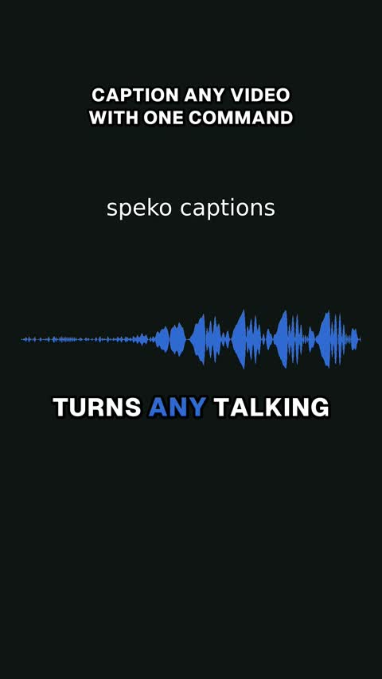
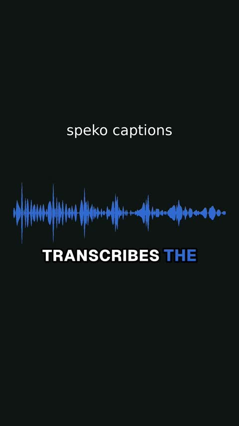
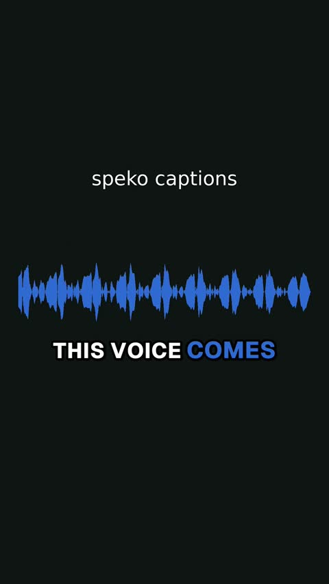

Word-level captions for talking videos. One command.
Open-source CLI and coding-agent skill. Drop in a video, get back a 1080x1920 clip with karaoke captions, hook text, speaker tags, and normalized audio. Transcription runs through the Speko API; ffmpeg does the rest on your machine.
$ export SPEKO_API_KEY=sk_... # key at speko.ai $ git clone https://github.com/SpekoAI/captions && cd captions && uv sync $ uv run speko-captions render your-video.mp4 out/your-video.captioned.mp4 1080x1920 h264 aac -14 LUFS
What a render looks like



samples/make_sample.py to reproduce.How it works
| Transcript | Audio goes to Speko /v1/transcribe. The router benchmarks STT providers continuously and picks the lane per request. |
| Word timing | faster-whisper aligns per-word timestamps locally. Timing only; the Speko transcript stays the text truth. |
| Captions | Phrase-aware pages, active-word highlight, filler stripping, hooks, speaker tags. Placement clears TikTok, Reels, and Shorts UI. |
| Render | ffmpeg: lanczos upscale to 9:16, subtitle burn, denoise, two-pass loudness to -14 LUFS, faststart mp4. |
| Agents | SKILL.md turns a coding agent into the editor: it reconciles the transcript, writes the config, and frame-QAs its own render. |